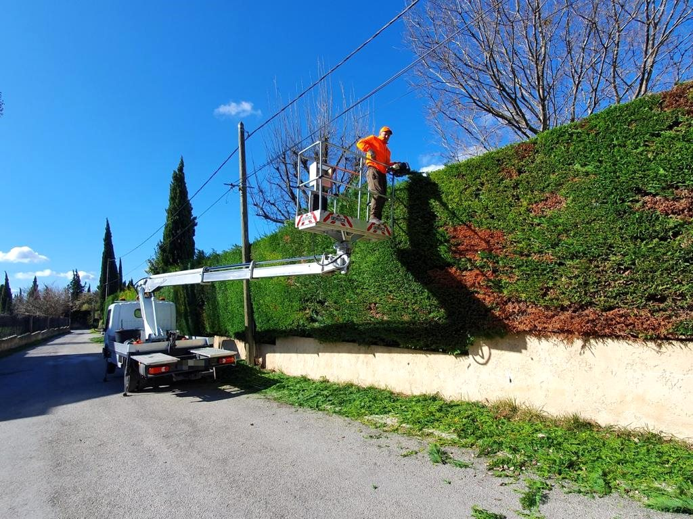
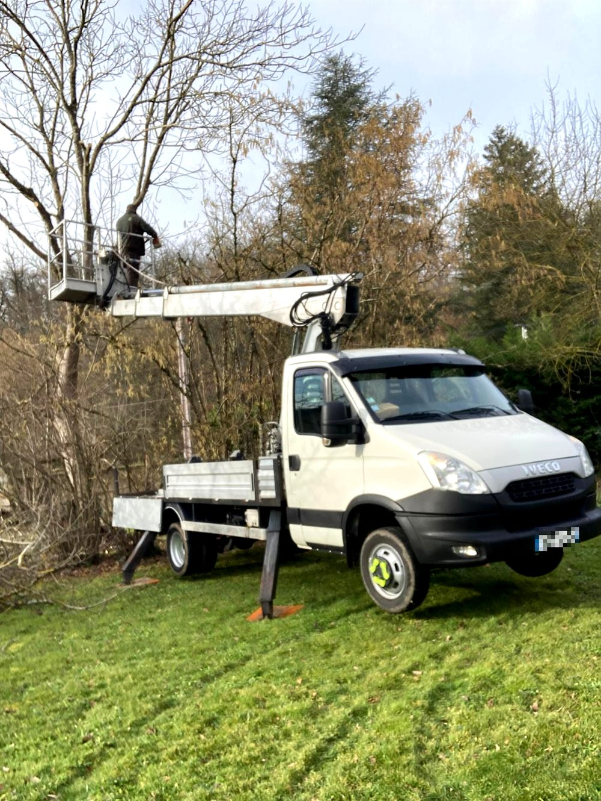
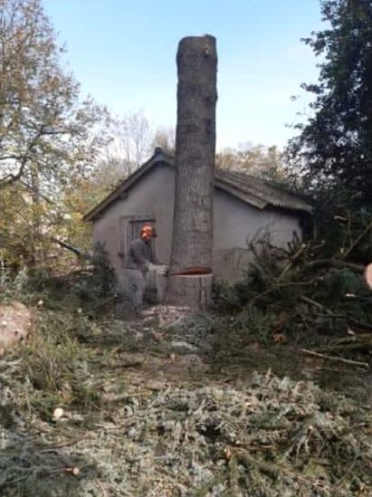
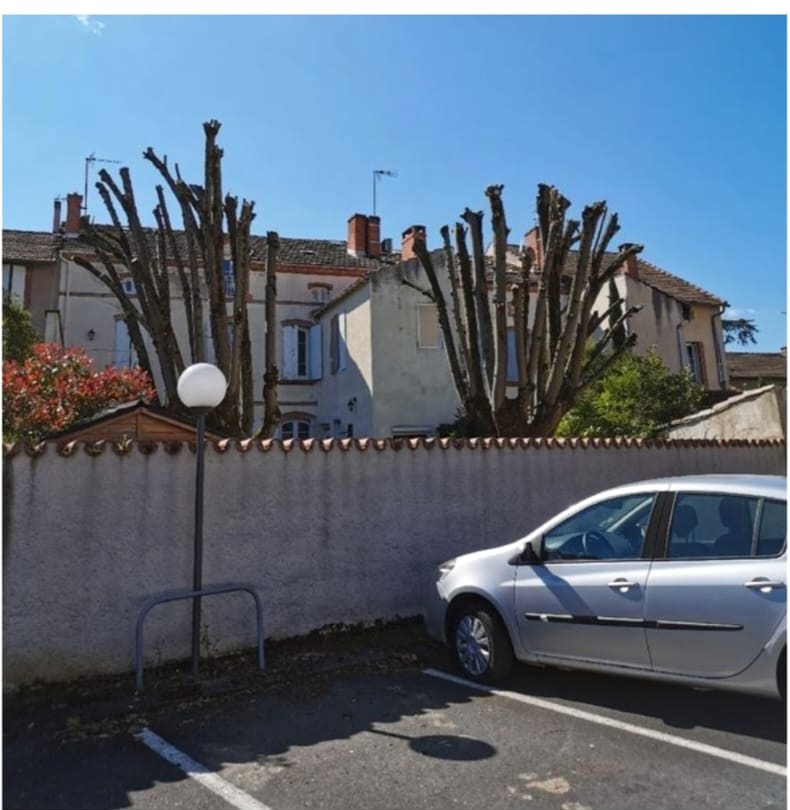
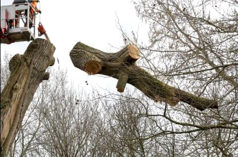
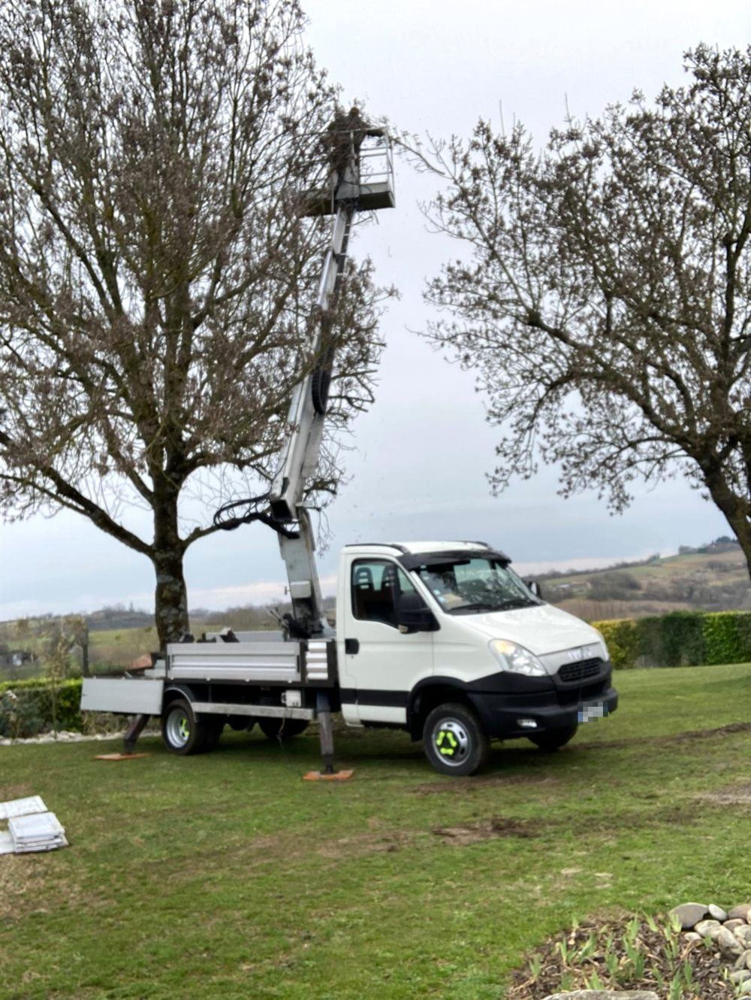

Élagage
Taille et allègement des branches pour la santé de l'arbre, la lumière et la sécurité autour de la maison.
Élagage, abattage, taille de haie et débroussaillage. Nous intervenons chez vous avec notre camion-nacelle, même là où l'accès est compliqué.

Du simple entretien de jardin à l'arbre difficile d'accès : un seul interlocuteur, un devis clair avant de commencer.
Taille et allègement des branches pour la santé de l'arbre, la lumière et la sécurité autour de la maison.
Arbre dangereux, malade ou trop proche d'un bâtiment : abattage maîtrisé, y compris par démontage en hauteur.
Haies hautes ou longues, taillées proprement depuis la nacelle, avec ramassage sur demande.
Terrains envahis, abords de maison, talus : nous remettons tout au propre.
Réduction de la hauteur des arbres trop grands, comme les platanes ou peupliers en milieu urbain.
Entretien régulier de jardins, pour particuliers et copropriétés.

Pas besoin de grimper partout ni d'abîmer votre jardin : le camion-nacelle permet de travailler en hauteur, de façon stable et sécurisée, sur les arbres hauts et les grandes haies.
Des photos de nos vrais chantiers.






Appelez-nous ou envoyez-nous un SMS avec une photo : nous vous répondons et vous proposons un devis gratuit.